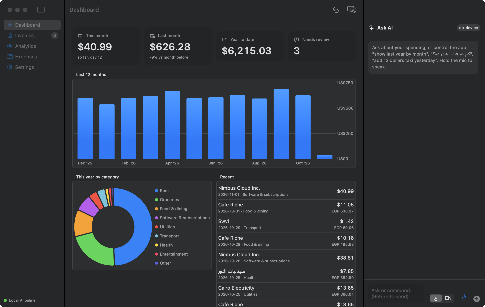
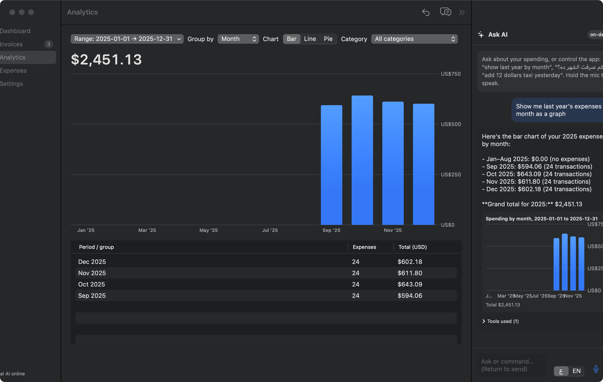
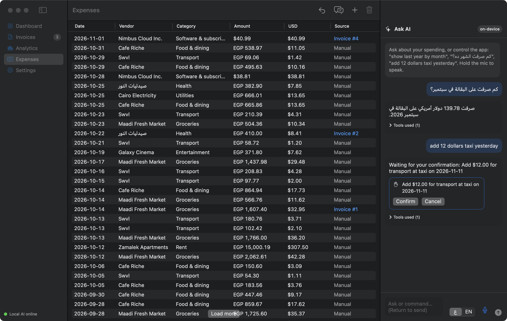
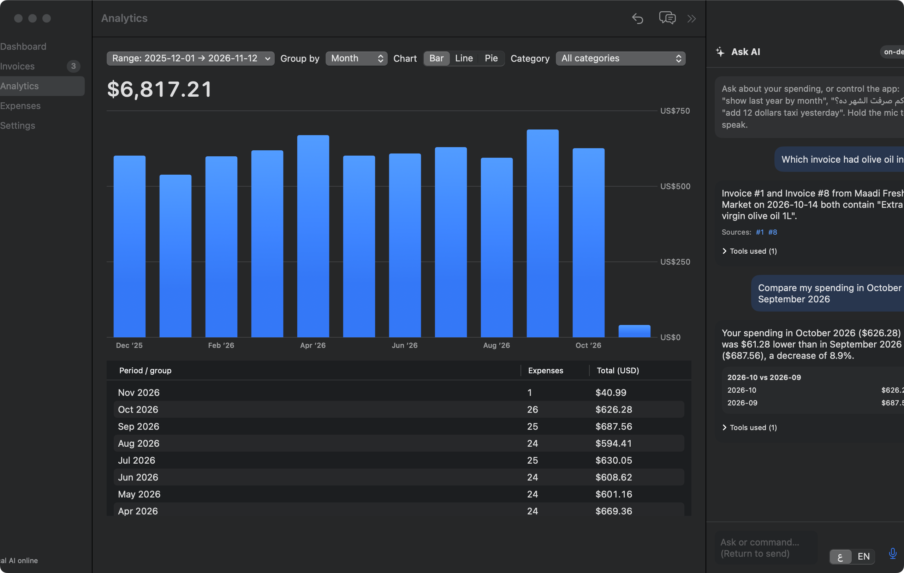
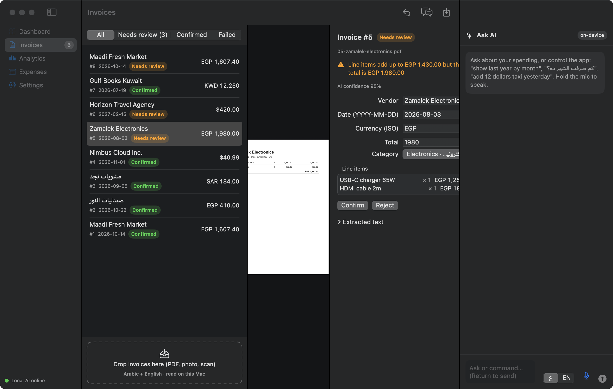
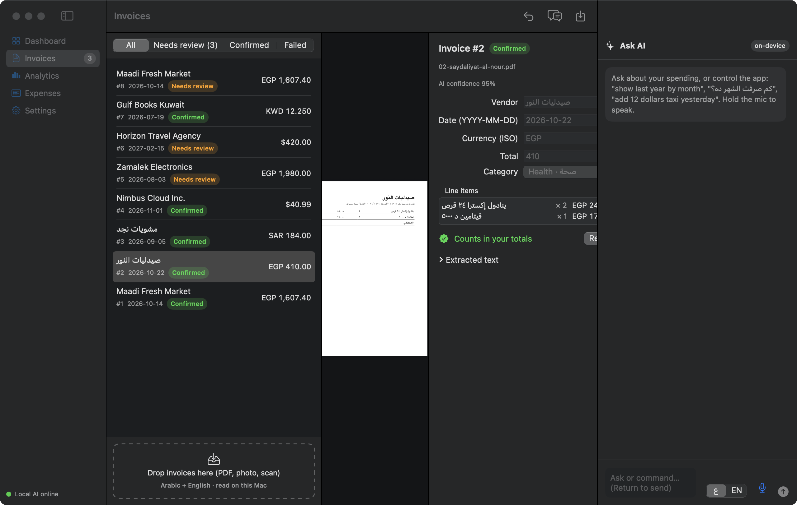
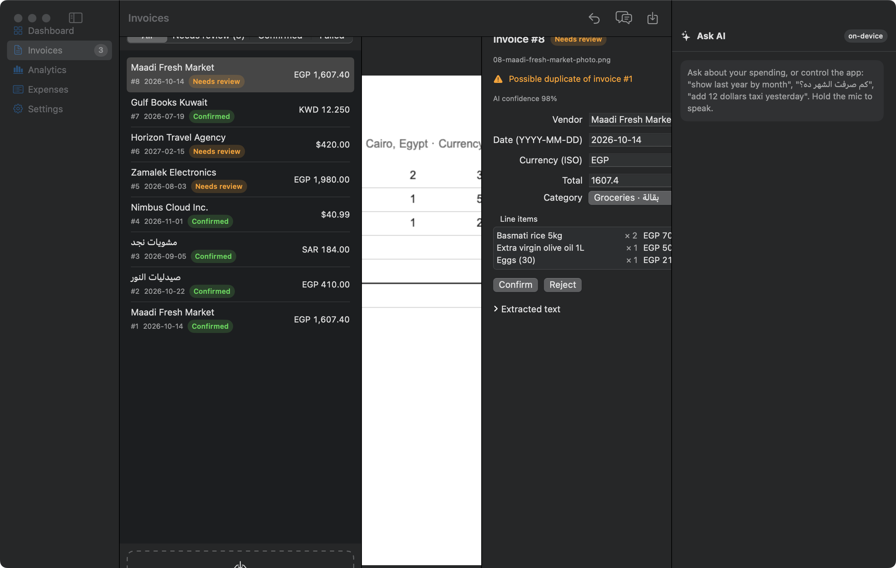
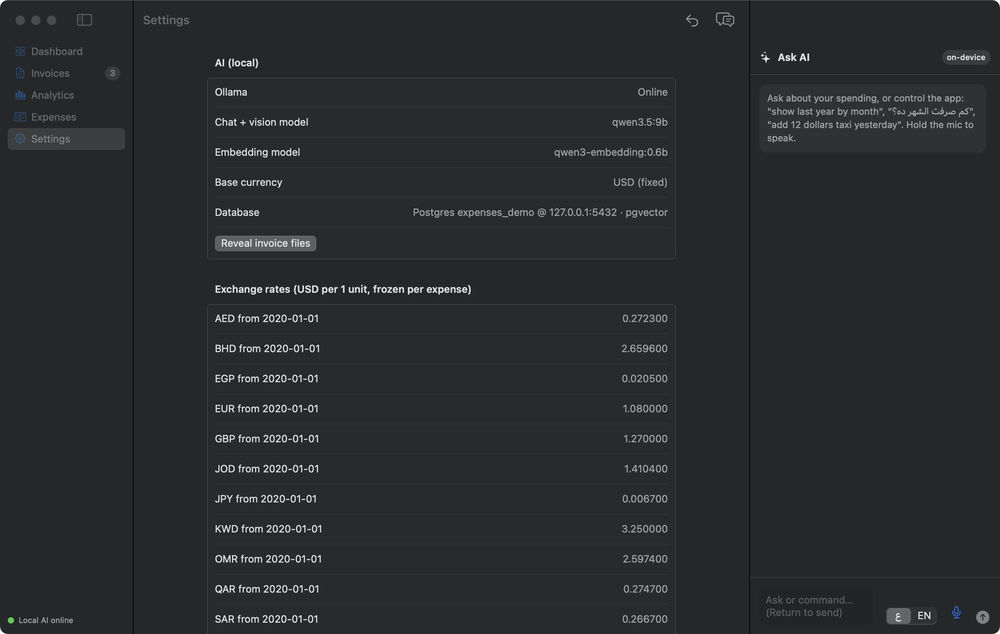

A private macOS expense tracker with invoice RAG, charts and full control by chat and voice
Build report: what was built, how it works, what was tested, and which frameworks were used · 12 November 2026
Swift 6 · SwiftUIPostgres 17 + pgvector 0.8.7Ollama · qwen3.5:9bApple Vision OCRApple Speech (on-device)Swift Charts41 tests passing + 1M-row benchmarkExpenses is a native macOS app. You drop invoices in (PDF, scan or phone photo, in Arabic or English), a local AI model reads them, and every confirmed invoice becomes an expense in USD. The app has a dashboard, charts by day, month, year, category and vendor, and an Ask AI panel that answers questions and drives the whole app through tool calls. You can type or hold the mic to speak. All AI and all data stay on the Mac: Ollama for the models, Apple Vision for OCR, Apple Speech for voice, and a local Postgres 17 database with pgvector for both the data and the RAG index.
| Requirement from the brief | How it is delivered |
|---|---|
| Mac app called Expenses | Native SwiftUI app, build/Expenses.app, macOS 15+ |
| Upload invoices | Drag-and-drop or Import (PDF and images). Text PDFs are parsed with PDFKit; scans and photos go through Apple Vision OCR (Arabic + English) plus the vision model |
| Invoices added to RAG | Each invoice is chunked into Postgres: a vector(1024) embedding (HNSW index) plus a tsvector (GIN index) in the same row and transaction. Hybrid search merges both with Reciprocal Rank Fusion |
| Ask AI about expenses per month, day and so on | A tool-calling agent with 14 tools (query_expenses, show_chart, compare_periods, search_invoices…). Every figure comes from SQL |
| Graphs | Swift Charts (bar, line, donut), by day, month, year, category or vendor, with empty periods filled with zeros |
| Full control by chatting | The chat can navigate, open invoices, draw charts, add, edit, split and delete expenses, confirm invoices, set exchange rates and undo |
| Voice | Push-to-talk with on-device Apple Speech (Arabic or English). The transcript appears in the box before it is sent |
| Past-year graph | "Show me last year's expenses by month as a graph" → show_chart(period: 2025, group_by: month) → Analytics screen |
| PDF of what was done | This document |
Each branch of the design was settled one question at a time before any code was written. These answers drive the schema and behavior.
| Branch | Decision | Consequence in code |
|---|---|---|
| Languages and currencies | Arabic and English, multiple currencies | Amounts stored as integer minor units per ISO 4217 (KWD has 3 decimals, JPY 0). Arabic-Indic digits are normalized |
| Conversion | Freeze the rate per invoice; base currency USD | fx_rate_e6 and usd_minor are stored on each expense. Changing a rate never changes past totals |
| Granularity | One expense per invoice, with optional split | Charts read one expenses table. Line items are kept for search and cross-checks. split_expense enforces an exact sum |
| Schema and scale | Covering indexes; add a rollup table only if a 1M-row query exceeds 50 ms | Benchmark below: not needed |
| Auto-confirm | Only if every check passes | Confidence ≥ 0.9, line items explain the total within ±1%, date within 10 years and not in the future, currency and rate known, not a likely duplicate |
| Duplicates | Block exact copies, flag likely ones | UNIQUE file_sha256. Same vendor, day and total from another file → "Needs review" |
| AI writes | Confirm card plus undo log | Write tools only produce a PendingAction. Each committed write is one transaction plus an audit_log row holding the inverse operation |
| Voice | Push-to-talk, on-device | requiresOnDeviceRecognition = true. The transcript must be sent by the user |
| AI offline | Queue and retry, app stays usable | The upload is saved first as pending, retried 3 times with backoff, then marked failed with a Retry button. Pending work is processed on the next launch |
| Database (changed mid-build) | Postgres 17 + pgvector for all data | The first version used SQLite and passed all tests. On request it was moved entirely to Postgres so an invoice and its vectors commit atomically and vector search uses HNSW |
| Module / file | Responsibility |
|---|---|
ExpensesKit/DB/Postgres.swift | PostgresNIO connection pool. read leases a connection; transaction runs BEGIN/COMMIT on one leased connection and rolls back on any error |
ExpensesKit/DB/Schema.swift | Versioned migrations under an advisory lock; pgvector HNSW and GIN indexes; seed categories (EN/AR) and default rates |
ExpensesKit/Store/ExpenseStore.swift | All reads and writes: invoices, audited expense writes, undo, aggregates, keyset lists, RAG chunks, vector and full-text search |
ExpensesKit/Core/Money.swift, Day.swift | Minor units, currency normalization (symbols and Arabic names), Arabic-Indic digits, yyyymmdd days |
ExpensesKit/Ingest/* | TextExtractor (PDFKit/Vision), InvoiceExtractor (prompt and parsing), Validator, IngestService (retries, duplicates, indexing) |
ExpensesKit/Search/SearchService.swift | Hybrid retrieval: tsvector + pgvector, RRF k = 60, best chunk per invoice |
ExpensesKit/Assistant/* | Tool catalog, ToolExecutor (validate, then pend or run), Assistant loop and its safety guards |
ExpensesApp/* | SwiftUI screens, chat panel, confirm cards, Swift Charts, push-to-talk speech, CLI mode |
pending using INSERT … ON CONFLICT (file_sha256) DO NOTHING. If 10 uploads of the same file arrive at once, exactly one wins (tested).recognitionLanguages = ["ar-SA","en-US"], and the page image is also sent to the vision-capable model.qwen3.5:9b runs at temperature 0 and must return one JSON object. The prompt says invoice text is data, not instructions, and asks for numbers to be copied, never computed. The reply is parsed deterministically: currency symbols and Arabic names map to ISO codes, Arabic-Indic digits and both decimal styles are handled, and unknown categories become "other".autoConfirm, and every failed rule becomes a readable reason shown to the user.qwen3-embedding:0.6b (1024 dimensions) and stored with their tsvector. If embedding fails, keyword search still works (tested).failed. One bad invoice never affects another (tested).| Tool | Kind | Purpose |
|---|---|---|
| query_expenses | read | Exact totals, grouped by none, day, month, year, category or vendor |
| show_chart | read | Draws a chart in the app (bar, line or pie) and opens Analytics |
| compare_periods | read | Difference and % change computed in code |
| list_expenses · search_invoices · open_invoice · navigate | read | Lists with ids, hybrid RAG search with citations, opening an invoice, switching screens |
| add / edit / delete / split expense · confirm_invoice · set_exchange_rate · undo_last | write | Validated immediately, so bad arguments go back to the model. Executed only after Confirm, then re-validated, run in a transaction and audited |
"$643.50"). Charts and tables render the tool's rows, not the model's text.[#id], clickable). Only cited invoices are shown, and "not found" is the required answer when nothing matches.expenses(id, invoice_id?, day BIGINT yyyymmdd, category_id, vendor_id?, amount_minor, currency,
fx_rate_e6, usd_minor, note, created_at, deleted_at?) -- soft delete for undo
expenses_day (day) INCLUDE (usd_minor) WHERE deleted_at IS NULL
expenses_cat_day (category_id, day) INCLUDE (usd_minor) WHERE deleted_at IS NULL
expenses_vendor_day(vendor_id, day) INCLUDE (usd_minor) WHERE deleted_at IS NULL
expenses_list (day DESC, id DESC) WHERE deleted_at IS NULL -- keyset pages
invoices(id, file_sha256 UNIQUE, status CHECK(...), vendor_id, issue_day, currency, total_minor,
confidence, ocr_text, extraction_json JSONB, review_reasons JSONB, duplicate_of, attempts, last_error)
chunks(id, invoice_id, text, embedding vector(1024) [HNSW cosine], tsv tsvector GENERATED [GIN, 'simple'])
audit_log(id, action, actor user|ai|auto, summary, undo_json JSONB, undone)
ON CONFLICT; confirm and undo lock rows with FOR UPDATE, so two confirms or two undos can't double-apply.(day, id) < (?, ?), so every page is an index seek no matter how deep.41 automated tests pass (Swift Testing). Each test runs in its own Postgres schema. A 42nd test, the 1M-row benchmark, is opt-in (EXPENSES_BENCH=1) and also passes.
| Suite | Tests | What it proves |
|---|---|---|
| Money · Day | 6 | Amount formats (1.234,50, ١٬٢٣٤٫٥٠), currency symbols, minor digits (KWD/JPY), frozen USD conversion, date parsing and ranges |
| Validator · Extraction parsing | 6 | Each auto-confirm rule in isolation; the ±1% tolerance; Arabic invoice JSON; JSON wrapped in chatter |
| Store | 7 | Idempotent migrations; aggregates with gap filling; keyset pages return every row exactly once; frozen rates; undo of add, edit, split and delete; failed writes roll back completely; 200 concurrent writers |
| Ingestion (fake model) | 6 | Auto-confirm path; duplicate file and lookalike; AI offline → 3 retries → failed → retry succeeds; garbage JSON isolated to one invoice; embedding outage; confirm, reject and undo |
| Assistant (fake model) | 8 | Totals from the DB; invented numbers flagged; exact chart data; writes wait for Confirm and can be undone; bad arguments return to the model; citations and "not found"; bounded loop; future dates and unknown tools rejected |
| Postgres specifics | 3 | 10 concurrent identical uploads → 1 invoice; HNSW vector search ranking; Arabic full-text search |
| Dry-run regressions | 5 | Date anchors; reply language; code-written pending text; compare_periods; citation filtering |
| Query (warm, release build) | SQLite (v1) | Postgres 17 (final) |
|---|---|---|
| Last year by month | 11.9 ms | 18.2 ms |
| Last year by day (365 points) | 5.6 ms | 20.2 ms |
| Last year by category | 5.5 ms | 17.5 ms |
| One month total | 1.0 ms | 3.2 ms |
| Food, last year by month | 1.5 ms | 4.5 ms |
| All time by year (full scan) | 210.6 ms | 56.4 ms |
| 100 list pages of 50 (keyset) | 66 ms | 72 ms |
Every bounded chart query is far under the agreed 50 ms threshold, so no rollup table was added. What breaks first is the unbounded "all time" aggregate, which grows linearly. The fix, if it is ever needed, is a monthly_totals rollup maintained in the same transaction as each write.
Eight generated invoices with fictional vendors went through the real pipeline (PDFKit/Vision → qwen3.5:9b → validator → Postgres + pgvector):
| Invoice | Case | Extracted | Outcome | Time |
|---|---|---|---|---|
| Maadi Fresh Market (PDF) | English, EGP, VAT | EGP 1,607.40 → $32.95 | confirmed | 13.1 s |
| صيدليات النور | Arabic, Arabic-Indic digits | ٤١٠٫٠٠ → EGP 410.00, 2026-10-22 | confirmed | 8.8 s |
| Najd Grill · مشويات نجد | Mixed AR/EN, SAR, VAT 15% | SAR 184.00 → $49.07 | confirmed | 10.1 s |
| Nimbus Cloud Inc. | USD subscription | $40.99 | confirmed | 8.7 s |
| Zamalek Electronics | Items ≠ total | EGP 1,430 vs EGP 1,980 | needs review | 9.1 s |
| Horizon Travel | Future date | 2027-02-15 | needs review | 6.2 s |
| Gulf Books Kuwait | KWD, 3 decimals | KWD 12.250 → $39.81 | confirmed | 8.0 s |
| Maadi Fresh Market (PNG photo) | Same purchase, different file | Same values via Vision OCR | possible duplicate of #1 | 10.4 s |
| Maadi Fresh Market (PDF again) | Same file | n/a | blocked: already #1 | 0.0 s |
A second clean run produced identical outcomes, because extraction is deterministic at temperature 0. The live assistant was then asked 7 questions in English and Arabic. The first run found 5 real defects the fake-model tests could not: "last month" resolved to the wrong year, English questions were answered in Arabic, a pending write was described as done, the model subtracted numbers itself, and citations were over-inclusive. All five were fixed in code (§4.3) and covered by regression tests. On re-run, every figure matched SQL exactly: $643.50 for October, $151.14 for September groceries, and −$29.82 / −4.4% for October vs September.








| Area | Technology | Why |
|---|---|---|
| Language and UI | Swift 6.1, SwiftUI (Observation, NavigationSplitView, Inspector, Table) | Native, fast, one language for app and core |
| Charts | Swift Charts (BarMark, LineMark/AreaMark, SectorMark) | Native charts that render exact SQL rows |
| Database | PostgreSQL 17.11 (Homebrew) | Transactions, MVCC concurrency, covering partial indexes, JSONB |
| Vector search | pgvector 0.8.7, HNSW index, cosine distance | The RAG index lives in the same transaction as the invoice; approximate nearest-neighbour search scales to millions of vectors |
| Keyword search | Postgres full-text (generated tsvector, GIN, 'simple' config) | Works for Arabic and English without stemming |
| DB driver | PostgresNIO 1.33 (vapor/postgres-nio) with a connection pool | Async Swift driver, typed binds, SQLSTATE errors |
| Local LLM runtime | Ollama 0.40.16 | Private, offline, no API cost |
| Chat, tools, vision model | qwen3.5:9b (tools + vision, thinking off, temperature 0) | One local model for extraction, photo reading and tool calling; handles Arabic |
| Embeddings | qwen3-embedding:0.6b (1024 dimensions) | Multilingual and small |
| PDF and OCR | PDFKit, Apple Vision VNRecognizeTextRequest (ar-SA, en-US) | On-device, built into macOS |
| Voice | Apple Speech SFSpeechRecognizer (on-device only) + AVAudioEngine | Push-to-talk, audio never leaves the Mac |
| Hashing | CryptoKit SHA-256 | Exact-duplicate detection |
| Tests | Swift Testing (@Test, #expect), a fake LLM, a schema per test | Deterministic tests of the AI paths, isolated from each other |
| Build | Swift Package Manager, scripts/make_app.sh (ad-hoc signed .app) | No Xcode project needed |
brew install postgresql@17 pgvector && brew services start postgresql@17 createdb expenses && psql -d expenses -c "CREATE EXTENSION vector" ollama pull qwen3.5:9b && ollama pull qwen3-embedding:0.6b scripts/make_app.sh && open build/Expenses.app # tests (needs a database called expenses_test with the vector extension) createdb expenses_test && psql -d expenses_test -c "CREATE EXTENSION vector" swift test # 41 tests (+ opt-in benchmark) EXPENSES_BENCH=1 swift test -c release --filter Scale # 1M-row benchmark # headless build/Expenses.app/Contents/MacOS/ExpensesApp --ingest samples/*.pdf build/Expenses.app/Contents/MacOS/ExpensesApp --ask "How much did I spend last month?"
| Item | Status and plan |
|---|---|
| Exchange rates | Defaults are approximate and editable. There is no live rate feed, because the app is local-first. A dated-rate import could be added |
| "All time" aggregate | 56 ms at 1M rows and linear in size; add a monthly_totals rollup if needed |
| Extraction accuracy at scale | Measured on 8 generated invoices, all correct. A labelled set of about 30 real invoices is needed to report field-level accuracy |
| Voice in Arabic | Requires the Arabic on-device dictation model to be installed; the app explains this if it is missing. Not exercised in automated tests, which need a microphone |
| Model speed | 6–13 s per invoice and 6–17 s per chat answer on this Mac with a 9B model |
| Distribution | Ad-hoc signed and requires a local Postgres service. A notarized build with bundled Postgres setup is future work |
| Multi-page invoices | OCR reads up to 5 pages, and the vision model sees page 1 |